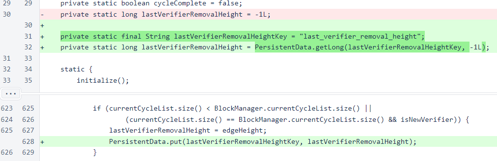
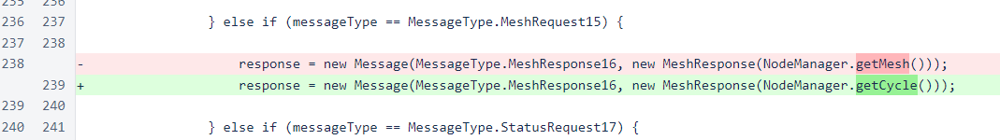
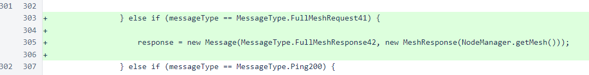
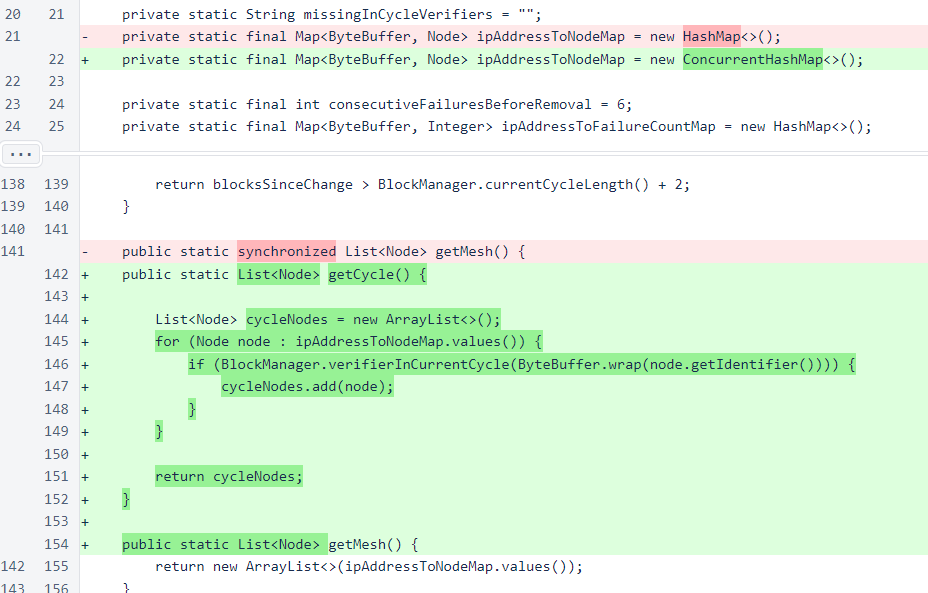
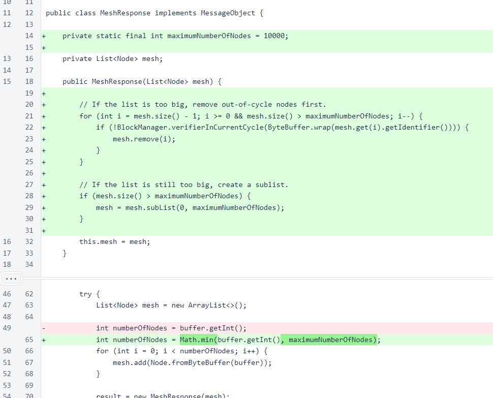

Nyzo version 509 (commit on GitHub) limits the mesh response to in-cycle nodes only.
This version only affects the verifier.
In Nyzo, blockchain rules strictly control growth of the cycle. However, there is no limit to the number of nodes that can express their desire to join the cycle, and there is no limit to the rate at which nodes can request to join the cycle. This means that the list of out-of-cycle nodes is unbounded and can grow quickly.
Future versions will address the unpredictable nature of the out-of-cycle node list more thoroughly. To improve the stability and performance of the verifier, this version changes the MeshResponse15 message to return only in-cycle nodes, and it places a limit on the size of the node list. It also adds a new message that returns a full node list that includes out-of-cycle nodes.
In an unrelated change, this version also adds the PersistentData class to allow storage and retrieval of values that are small, change infrequently, and tedious to recalculate on demand. This class is used in this version to persist the lastVerifierRemovalHeight field of the BlockManager class.
In the BlockManager class, the lastVerifierRemovalHeight field is initialized from persistent storage. Whenever its value changes, it is saved to persistent storage.
In the MeshListener class, MeshResponse16 objects now contain a list of verifiers in the cycle, not the list of all nodes known to the node manager.
A new response, FullMeshResponse42, has been added for the instance where out-of-cycle nodes are also required.
In the NodeManager class, the map that stores nodes has been changed to a concurrent map. A method has been added for retrieving only in-cycle nodes, and method synchronization has been removed.
The PersistentData class is a simple key-value store that persists to a file. This class is optimized for simplicity and stability, not performance, and it should only be used for data that changes infrequently.

The MeshResponse class now limits the size of the response to 10,000 nodes. If a list is over the limit, out-of-cycle nodes are removed first.
